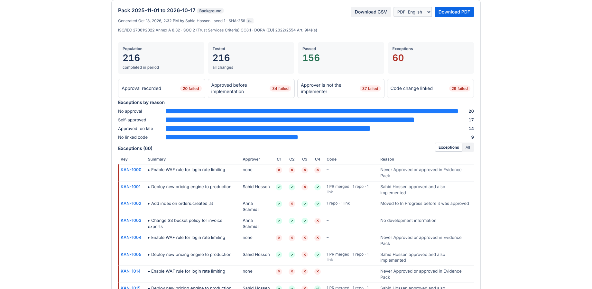

Getting started
You can build your first evidence pack in about five minutes. You need to be a Jira admin for the first step.
- Install the app. Find Evidence Pack in the Atlassian Marketplace and install it on your Jira Cloud site. Open it from Apps in the Jira sidebar. The first time, click Allow access so it can read issue history as you.
- Tell it what approval means for you. Go to Settings. Pick the status that means a change is approved (for example Approved or CAB approved) and the statuses that mean work has started (for example In Progress and Done). Pick the frameworks you report against. Save.
- Build a pack. Go to New pack. Enter JQL for the changes in scope, for example
project = OPS AND type = Change, and the audit period. Choose a random sample of 25, or test all changes. Click Generate pack. - Review the exceptions. The results show every change that failed a check, with the reason. Click a summary to see its full status history.
- Hand it over. Download the PDF for your auditor and the CSV for your own records. Both carry the same SHA-256 fingerprint.

Next steps
- Turn on approval in the ticket so approvers record decisions where the work happens.
- Add a monthly schedule in Settings so a pack for the previous month is ready on the first of every month.
- Restrict who can build packs and who can approve in Settings.